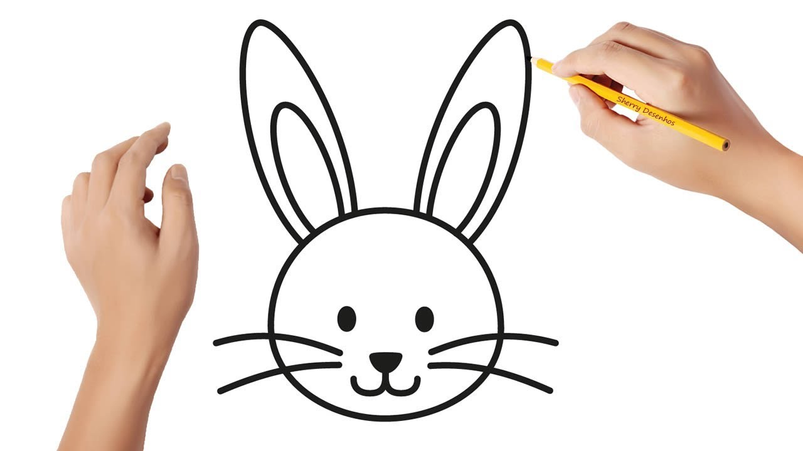

Apresentação SVG
Ao lado está apresentado o desenho produzido em SVG. Durante o processo de construção do desenho, houveram várias dificuldades, que surgiram principalmente por ele ser composto por diversas formas geométricas, com tamanhos, rotações e posições muito específicas. Abaixo será mostrado o desenho no qual a forma do coelho foi inspirada:
Com essa imagem em mãos, usei o Geogebra para definir os pontos a serem usados no SVG. Para isso, tracei as elipses, circulo, polígonos etc. De forma a se parecer com a imagem de referência. Confesso que deu um certo trabalho, possivelmente mais do que necessário.
Com os pontos definidos, fui transformando-os e adaptando-os para o svg. Para isso foi necessário varia contas e conhecimento de geometria analítica. Ao fim, consegui um coelho que, a meu ver, se parece com o de referência, e isso me deixou realizado.
Com a forma pronta, bastava colorir, então resolvi criar uma paleta harmonica a partir de uma obra do Romero Britto, e isso me deu a ideai de fazer um plano de fundo, de uma maneira parecida com o que é feito na obra. A obra escolhida foi a apresentada a seguir:
Com a imagem em mãos, usei o site Adobe Colors para extrair dela uma paleta harmônica, que seria posteriormente usada para colorir o SVG. Aplicando a ferramenta, obtive o seguinte resultado:

Por fim, bastou colorir o SVG com as cores indicadas, resultando na imagem fixada à direita na página.
A produção do SVG, bem como do HTML, foi intrigante, contudo bem trabalhosa. Mas ao final, o resultado foi satisfatório e pude aprender bastante sobre SVG e HTML no processo.